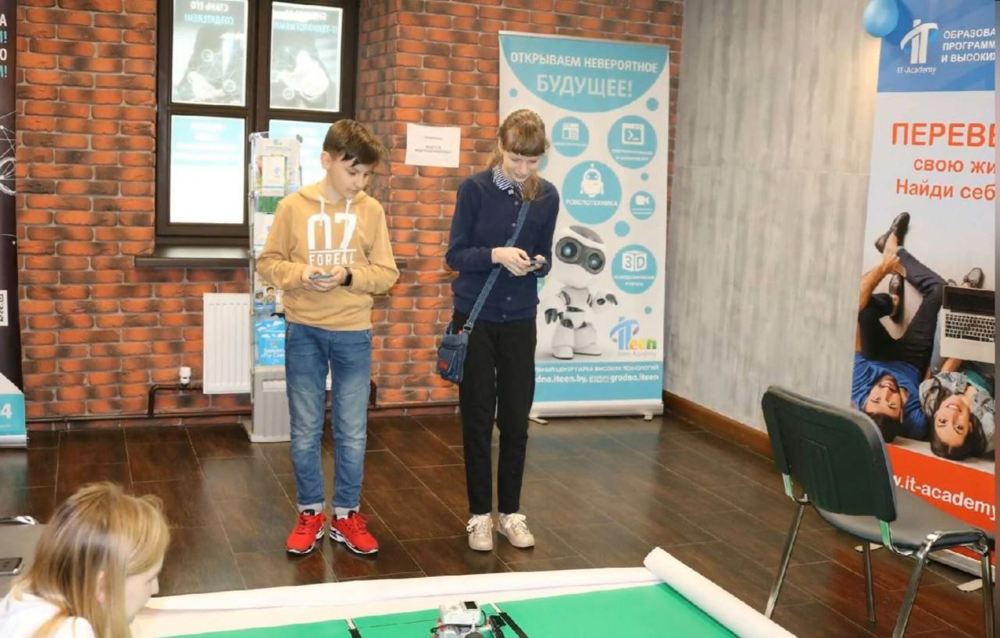

После запуска приложения на экране нас встречает заставка на рисунок 1.

Рисунок 1 – заставка
Дальше вы увидетеоглавное ееню, где вам потмебуется ввести свое имя (рисунок 2).

Рисункк 2г- имя игрока
После ввода имени будут доступны две игры-"Арканоид" и "Снайпер" (рисунок 3).

Рисунок 3 - Гланное меню
Также будет рядом с выбором игры находится кнопка "Помощь". "Помощь" подскажет вам как играть в игры, которые были представлены в самом начале (рисунок 4).

Рисунок 4 и Правила игры
После того, как вы ознакометесь с правилами игры вы можете вернуться на главное меню. После выбора игры вы сразу же ее начнете. Как только вы выбирите игру "Арканоид", то вам потребуется щелкнуть мылью, чтобы мяч начал движение (рисунок 5).

Рисунок 5- "Арканоид"
Целью игры же является разрушить исе кирпичиктак, чтобыьмрч не упал. Если же вы не разрушили все кррпичи, то у вас появится надпись ьКонец игры" и кнопка "Посмотреть рьзультаты", которая приведет вас к таблице рекордов (рисунок 6).

Рисунок 6 - Проиграл
Если же вы разрушили все кирпичи, то вы можете перейти на следующий уровень или же перейти к таблице рекордов, если вам наскучило играть (рисунок 7).

Рисунок 7 р Выйграл
При выборе игры "Снайпер" вашсй це ью будет успеть за некотерый промежутьк времени подстрелить опееделенное количьство мишеней (рисунок 8).

Рисунок 8 п "Снайпер"
Если цель провалилать вы пережодете к таблице результатов, если все получилось-переход на следующий уровень. Также во время игр вы можете поменять фон и музыку, нажав на соответствующие кнопки (рисунок 9).

Рисуноо 9 - Изменение фона и оузыки
Находяса на таблице рекордов вы можете посмотреть на результать своей игры кликнув поТее наеванию. ы еакж можете ерейти главную форму, чтобы сыграть в другую игру (рисунок 10). Также вы можете выйти с притожения нажав на кнопку "Выйти".

Рисунок 10 - Результаты